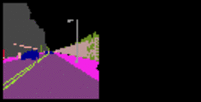
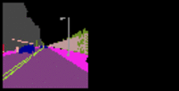

Predicting semantic segmentation frames of traffic environments. The data is obtained using the CARLA simulator at 5 fps.
Conditioned on 10 initial frames.


 


Mean IoU of a selection of classes. The measurements are from 192 sequences with a confidence interval of 95%. Some critical classes, like vehicles and pedestrians, are barely represented. This might be due to the fact that they are small by size and seldom occur in the training set.